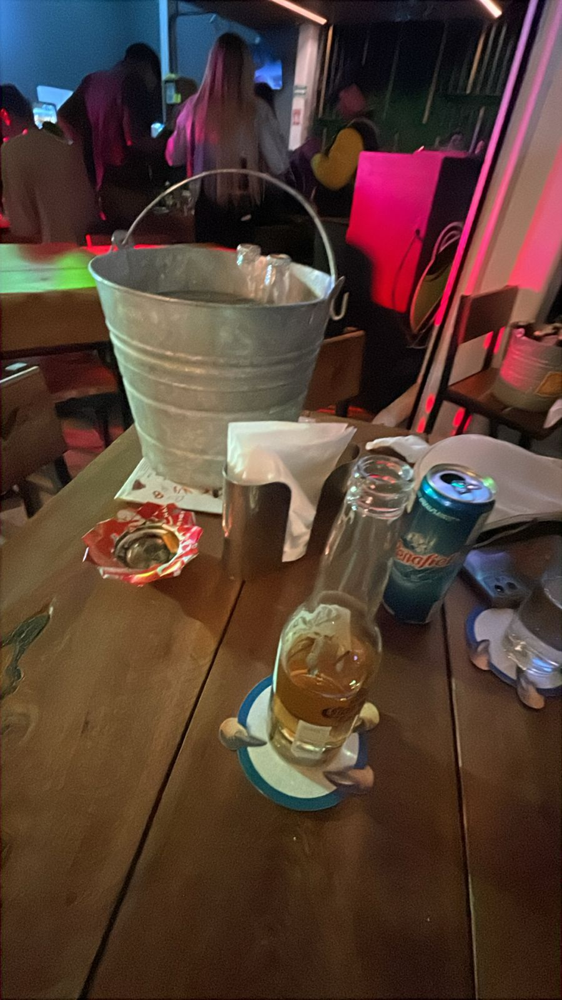
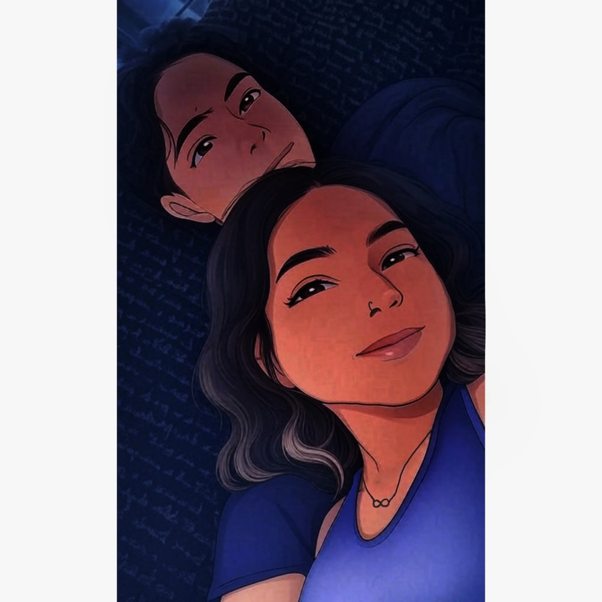

Mi princesa: Esta semana entendí que cuando pienso en el futuro, ya no me lo imagino solo. Ahora apareces tú. A veces con tu cabello despeinado, a veces con tu voz dulcemente firme, a veces con tus risas que lo llenan todo. Hablamos de Grecia, ¿recuerdas? Y aunque parecía un comentario más, dentro de mí fue una promesa disfrazada. Porque quiero ir a Grecia contigo, sí. Pero también quiero ir a todas partes. Quiero caminar por calles que no conocemos, probar comidas nuevas, tomar fotos en paisajes lejanos… pero sobre todo, quiero hacerlo de tu mano. Esta semana nuestras conversaciones se llenaron de ternura y de planes bonitos. No solo viajes, también imaginamos cómo sería vernos, abrazarnos, compartir el mismo espacio. Y eso me hizo sentir algo muy poderoso: esperanza. Porque ya no es un “ojalá algún día”, ahora es un “cuando pase, va a ser hermoso.” Y me emociona, me mueve el piso, me hace sonreír solo. A veces me dan ganas de contárselo al mundo, pero luego recuerdo que este amor es nuestro. Íntimo, suave, mágico. El tema del futuro comenzó a surgir más intensamente en esta semana. Ya no eran solo sueños lejanos; los dos comenzamos a ver un camino juntos, real y cercano. Hablamos de planes a largo plazo, y Grecia apareció como un destino común, pero no como una idea remota, sino como algo concreto que queríamos vivir. En las conversaciones, la palabra "nosotros" dejó de ser un concepto abstracto. Ahora tenía peso, estaba impregnada de una sensación de unión y de un compromiso mutuo por enfrentar el futuro juntos. La idea de un “nosotros” trascendió las palabras, convirtiéndose en una realidad palpable. La frase clave de la semana, “Contigo no hay destino que me parezca imposible,” expresa esta fe compartida en el otro y en la relación. Juntos, sentíamos que podíamos alcanzar cualquier meta que nos propusieramos, sin importar los obstáculos que pudieran surgir. Gracias por soñar conmigo. Por pintarme escenarios donde no hay miedo, solo cariño. Por hacerme sentir que todo lo que quiero empieza donde tú estás.
Momentos que derriten:
“Contigo no hay destino que me parezca imposible”
Momentos que irritan:
Que a veces no soy el mejor, esta semana falle y te hice sentir quiza menos atendida, me disculpo por ello quiza eso te alejo un poquito de mi y apago un poquitin la chispa, pero yo te amo vivamente y siempre sera asi

